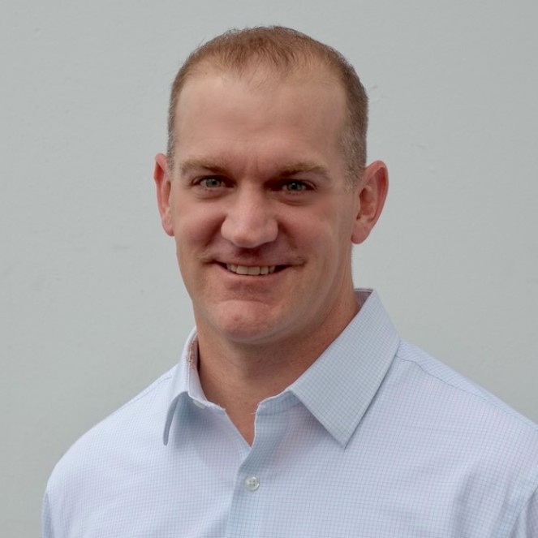

A 10-month guided journey for your church's lead team — built on the Vision Frame that has served 40,000+ church teams — to name your unique disciple-making identity and craft a God-sized dream for 2030 and beyond.
Normally $5,000 per church — grant-funded to $2,500 through CCL Network's Lilly Endowment grant.
What the co::Lab is, what your team will build, and why CCL Network is covering half the investment. (~16 min)
The church rarely lacks events, programs, or content. Somewhere along the way, the Great Commission quietly got rewritten in practice into something much smaller:
That's the problem underneath the problems: over-programmed and under-discipled. People connect to your building, your programs, and your personalities — the lower room — and every one of those can change overnight. The upper room is your church's purpose: a unique, disciple-making mission and vision. But in most churches, nobody has ever turned the lights on up there — not because leaders don't care, but because nobody ever gave them the tools or the guided time with their team to do the deep work.
That deep work is exactly what the co::Lab is.
The Pivvot process moves your team through six stages — each with a proven master tool and a mantra your leaders will still be repeating years from now.
Name the real problem. Redefine success beyond attendance and programs, and fuse Jesus' multiplication model into your ministry model.
You're done borrowing another church's vision. You want to lead from conviction, not photocopy — and you're willing to do the work to name what God is actually calling your church to.
The co::Lab is designed for normal-size churches — the backbone of the Kingdom. Larger churches are welcome; talk with Andrew about fit for your context.
Your elders and key staff journey with you. Alignment isn't bolted on at the end — it's built in from the first session, so the vision belongs to the whole team.
The same tools that clarify vision for some of the largest churches in the country were built for churches of every size — and this cohort is reserved for churches like yours.
We went from 15 competing priorities to 3 clear ones. Our staff has never been more focused.
The Vision Frame gave us language our entire leadership team could rally behind. Game changer.
RunFree helped us align 30,000 members around a clear, compelling vision for the first time in decades.
Get the full details, talk through your context and your eldership, and ask anything on a real conversation — no commitment required.
Team,
I'd like our church to join the Pivvot Vision Framing co::Lab — a 10-month guided journey with RunFree.Co, in partnership with CCL Network.
It's built on the Vision Frame methodology that more than 3,000 churches and 40,000 church teams have used. Our lead team would meet virtually 4 hours a month, and by the end we'd have two finished deliverables: a codified Vision Frame (our mission, values, strategy, and measures) and a Horizon Storyline (a long-range plan we can actually execute).
The investment is normally $5,000 per church, but a Lilly Endowment grant through CCL Network covers half — so it's $250/month for 10 months. The cohort is limited to eight churches.
Could we discuss this at our next meeting?
[Your name]

From Andrew…we want to help leaders run free into what Jesus actually started.
For years I've sat with church teams — elders, staff, lead ministers — who love Jesus and work incredibly hard, but who couldn't answer the five irreducible questions of leadership the same way twice. Not because they don't care. Because nobody ever turned the lights on in the upper room with them.
The co::Lab is the most accessible way we've ever offered this process. CCL Network's kingdom generosity through the Lilly grant cuts the investment in half, and the cohort format means your team isn't walking alone — seven other churches are doing the deep work right beside you.
Eight seats. Ten months. A vision only your church can carry.
If you want to talk it through first, my inbox is open — andrew@runfree.co. I'd love to hear about your context.
— Andrew Estes
Vision Coach, RunFree.Co
Eight churches, one guided journey, half the investment covered by the Lilly grant. Reserve your church's seat — or start with a conversation.
Vision Frame + Horizon Storyline deliverables · Online learning community all year · Digital library of Will Mancini's books included